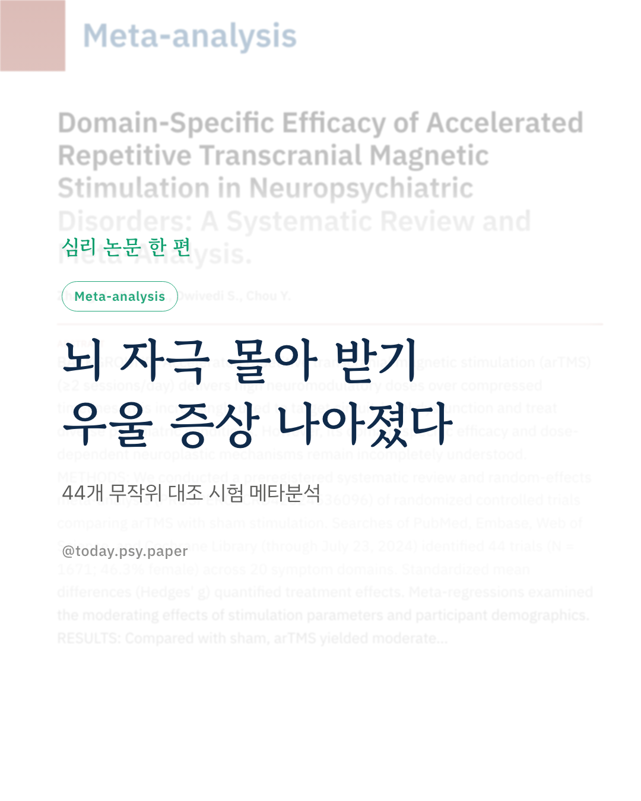
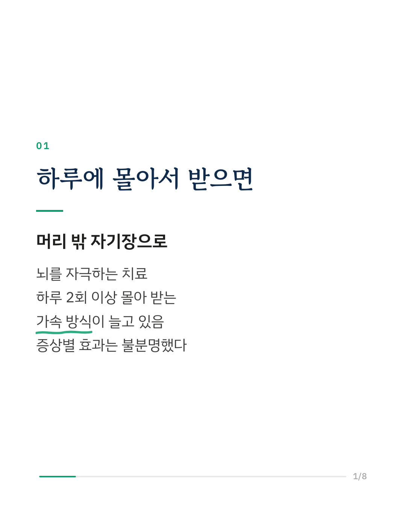
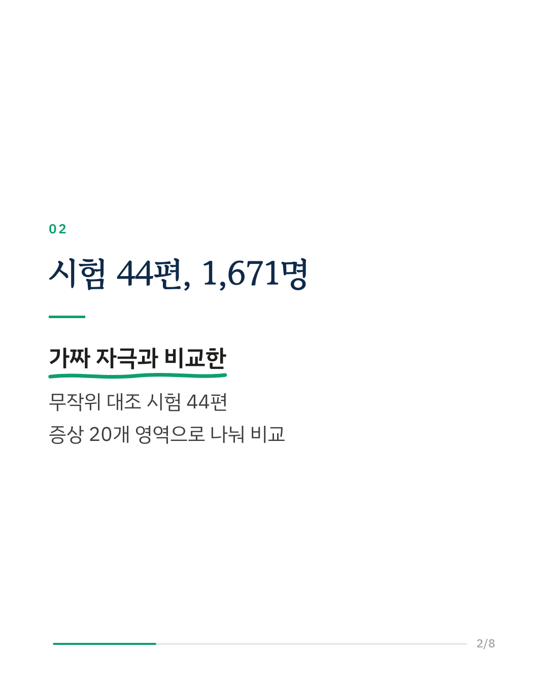
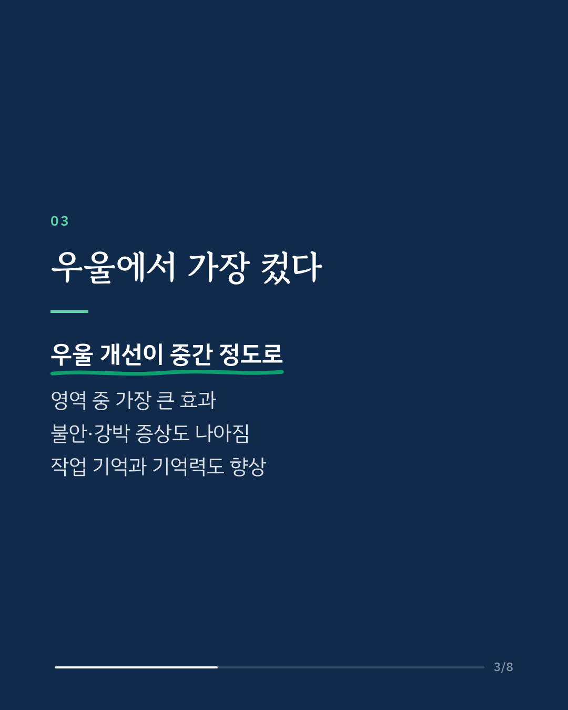
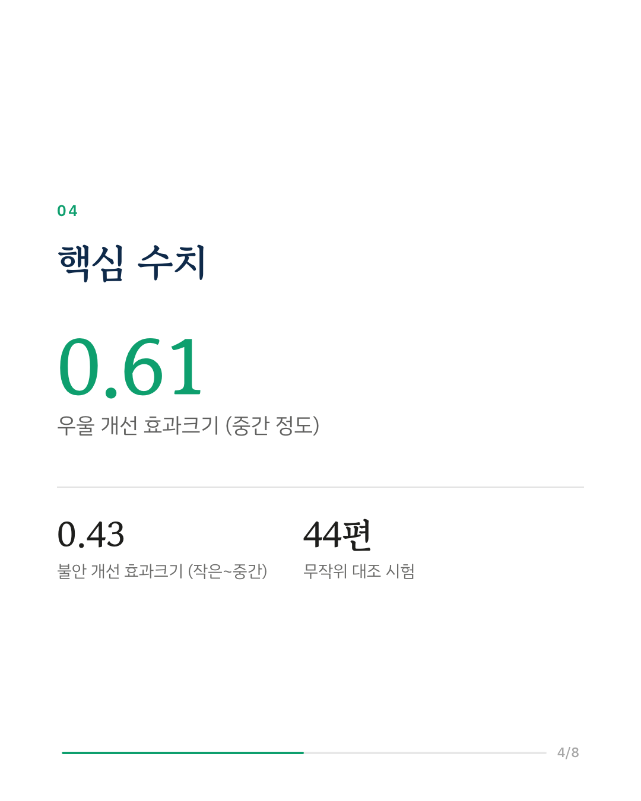
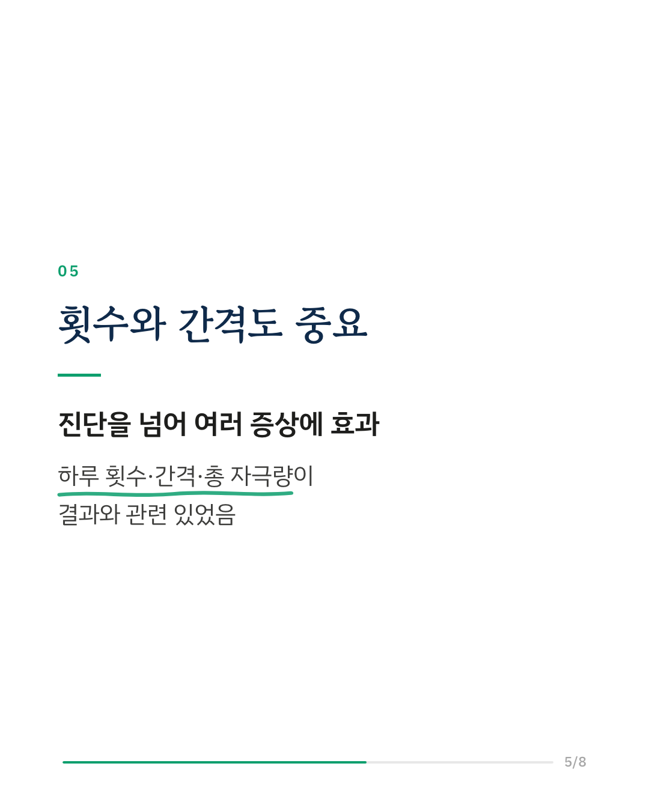
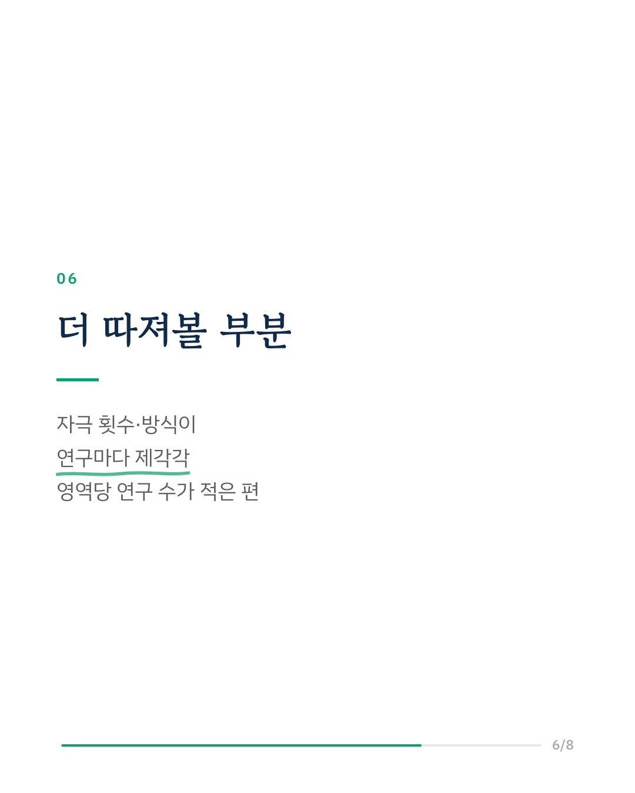
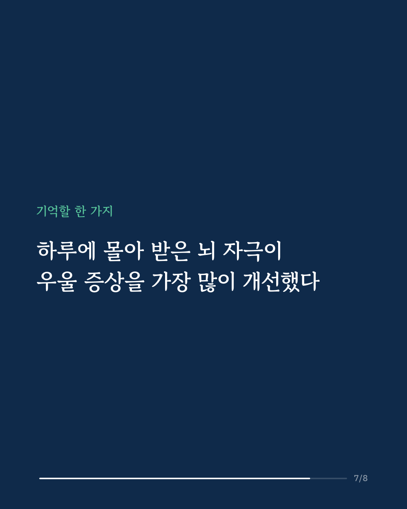
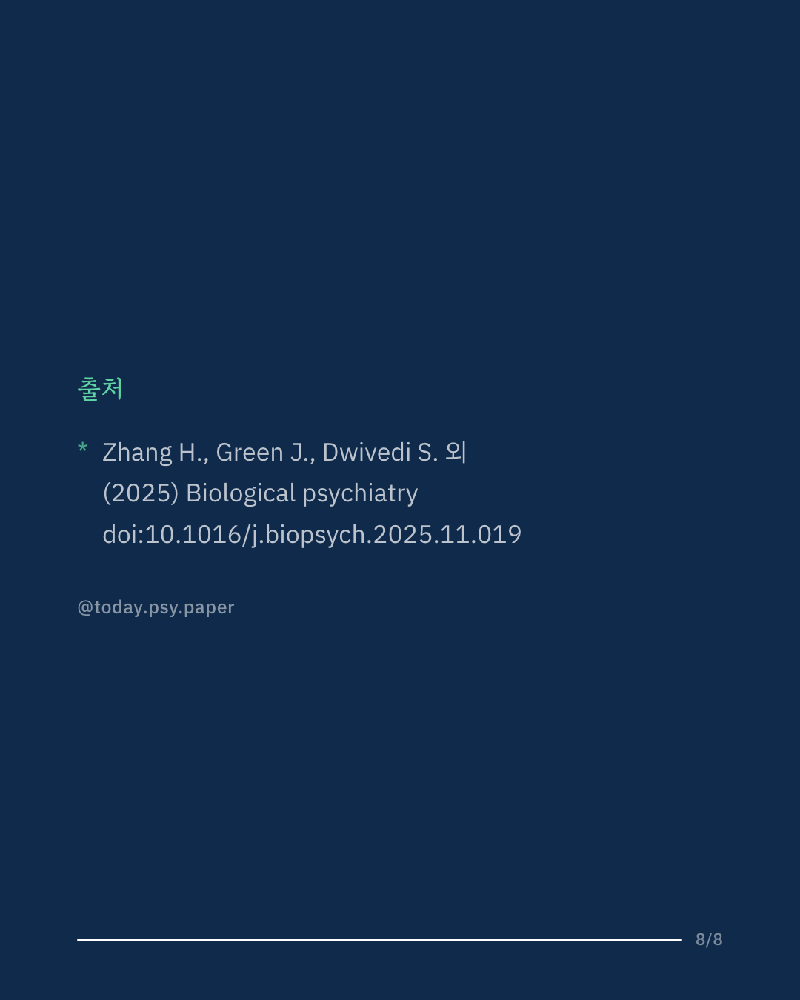

반복 경두개 자기 자극(rTMS)은 머리 밖에서 자기장으로 뇌를 자극하는 우울증 치료입니다. 최근에는 하루에 2회 이상 몰아서 받는 '가속 방식'이 늘고 있는데, 어떤 증상에 얼마나 효과가 있는지는 정리되지 않았습니다. 연구진은 가속 방식과 가짜 자극을 비교한 무작위 대조 시험 44편(참가자 1,671명)을 모아 증상 20개 영역별로 분석했습니다. 우울 증상 개선이 중간 정도로 가장 컸고, 불안·강박 증상과 작업 기억, 기억력도 가짜 자극보다 나아졌습니다. 부작용은 가볍고 잠깐 나타났다 사라졌습니다. 하루 자극 횟수, 자극 사이 간격, 총 자극량, 나이와 성별이 일부 영역에서 결과와 관련이 있었습니다. 다만 연구마다 자극 방식이 달랐고, 20개 영역에 연구가 나뉘어 영역당 연구 수는 적은 편이었습니다. 출처: Biological Psychiatry (2025), 'Domain-Specific Efficacy of Accelerated Repetitive Transcranial Magnetic Stimulation in Neuropsychiatric Disorders: A Systematic Review and Meta-Analysis' DOI: 10.1016/j.biopsych.2025.11.019 #임상심리 #정신건강정보 #심리학연구 #논문리뷰 #우울증 #우울증치료 #경두개자기자극 #강박장애
python3 publish.py 41338357